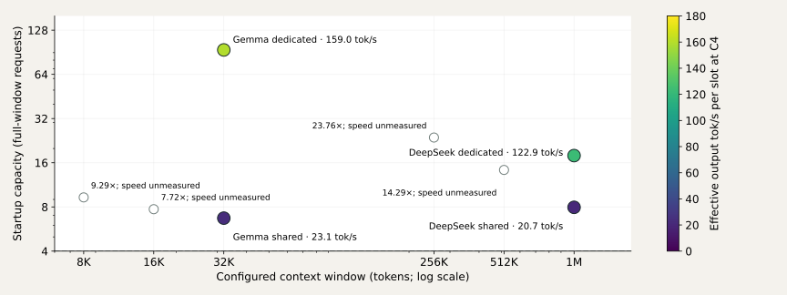
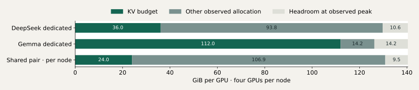
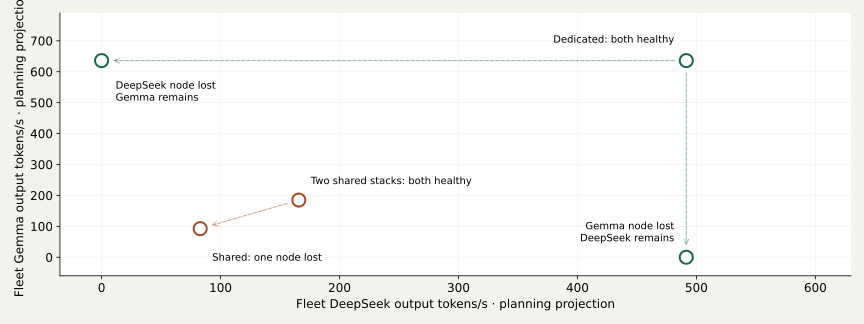
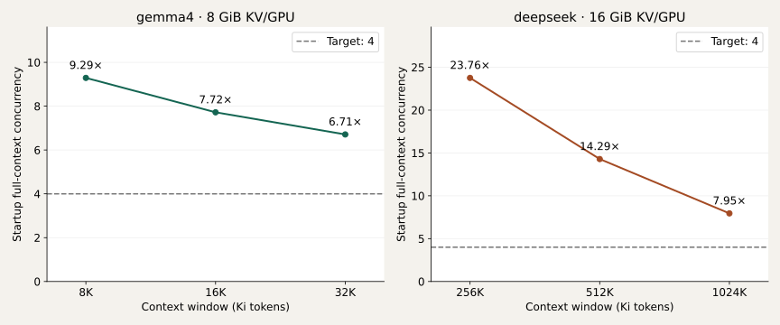
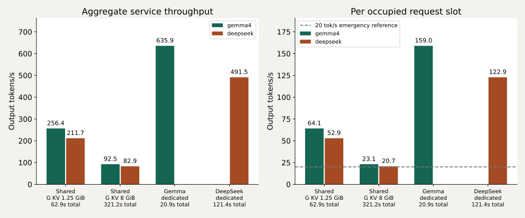
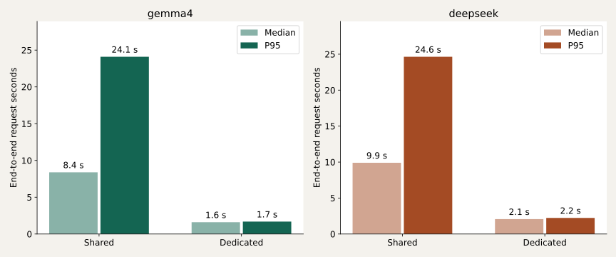
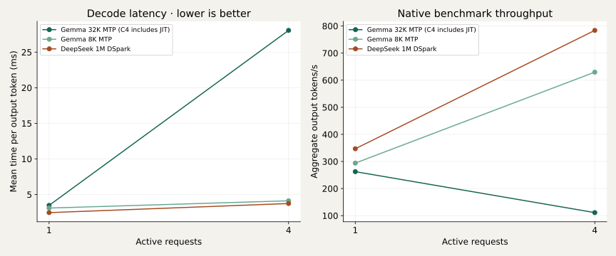
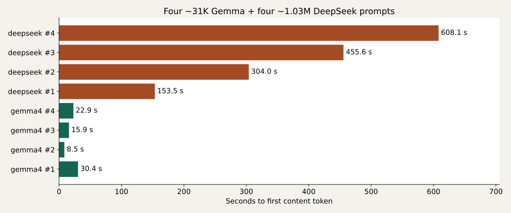

Selected: a dedicated node per model
Executive brief · 1 / 5 · Two nodes, each 4 × H200 + 2 TB host RAM
DeepSeek and Gemma each get four H200s. The selected layout prioritizes throughput over model-level HA.
Selected · dedicated nodes
Node A → DeepSeek TP4 · 1M context
Node B → Gemma TP4 · 32K context
123 / 159 effective tok/s per slot
DeepSeek / Gemma at four active requests each.
Each model gets all four GPUs. Losing its node removes that model until recovery or redeployment.
Alternative · two shared stacks
Node A → DeepSeek TP4 + Gemma TP4
Node B → DeepSeek TP4 + Gemma TP4
20.7 / 23.1 effective tok/s per slot
Measured on one node with four requests per model.
With health-aware routing, either node can retain both endpoints. Four total requests/model split 2+2 were not benchmarked.
20 tok/s is an emergency floor, not a launch target. The shared run does not qualify a reliable decode-speed floor. Dedicated nodes are the stronger performance-first launch candidate; model-level HA needs a separate solution.
Canonical dedicated deployment instructions · Engine Swarm stack · DeepSeek YAML · Gemma YAML · Optional router stack
Rates include prefill and drain, not isolated decode. Shared: 321s; dedicated DeepSeek: 121s; Gemma: 21s. Measurements used NVLink H200s. Two-node behavior is projected; no fleet/failover test was run.
Context, capacity and speed
Executive brief · 2 / 5 · Three metrics, with the missing evidence visible

At the same 32K / 1M windows, dedicated controls delivered 6.9× / 5.9× the shared C4 throughput.
Do not read the plotted capacity as the tested user count. Every colored speed point used four short requests (~1K input / 256 output), not the full window or the startup maximum. Dedicated cache budgets and scheduler limits also differ. Shared 4 + 4 near-full-context residency was verified separately.
What each dedicated node provides
Executive brief · 3 / 5 · Same four GPUs per model; no competing engine

DeepSeek node · TP4 + EP + DSpark
1M context · 17.90× startup capacity
36 GiB KV/GPU = 144 GiB/node.
~519 GiB HBM/node at observed peak; 491 output tok/s at C4.
~188.8 GiB of Engram tables/scales are pinned in host RAM. The 2 TB host supports this offload; it is not an extra 2 TB of GPU KV. Total host RAM occupancy was not measured.
Gemma node · TP4 + FP8 KV + MTP
32K context · 93.89× startup capacity
112 GiB KV/GPU = 448 GiB/node.
~505 GiB HBM/node at observed peak; 636 output tok/s at C4.
This is a cache-heavy configuration, not proof that ~94 full-window users decode at the C4 rate. Extra host RAM does not automatically enlarge this GPU cache.
Physical HBM measured: 140.4 GiB/GPU, 561.6 GiB/node. Dedicated startup maxima were not load-tested. Headroom is relative to observed workloads; the Gemma throughput control was short.
What happens when one of the two nodes fails?
Executive brief · 4 / 5 · Planning projections, not measured fleet results

Replication preserves both models; it does not preserve all healthy-fleet capacity.
Projection assumes independent equivalent nodes and the measured C4 workload wherever a model runs. Two healthy shared nodes mean eight active requests per model total; after failure the verified one-node target is four per model, with overflow queued. Dedicated controls use four per model total. Four total requests split 2 + 2 across shared nodes were not benchmarked. Failure arrows exclude cold redeployment; routing and failover still need implementation and testing.
What to sacrifice—and what it actually buys
Executive brief · 5 / 5 · Keep capacity, speed and availability separate

Shorten context → more cache capacity
DeepSeek 1M → 512K: 7.95× → 14.29× (+80%).
Gemma 32K → 16K: 6.71× → 7.72× (+15%).
These are admission-capacity gains. No matched throughput run proves a speed gain from changing the limit alone. Actual million-token prompts still have a major cold-prefill cost.
Share GPUs → replicate both models
The measured speed sacrifice buys co-location and potential model-level HA, not longer context: both layouts retain 32K / 1M.
For a performance-first launch, qualify the dedicated layout with longer workload tests. If HA is mandatory, the shared layout needs further speed qualification. MPS remains experimental after C4 crashes.
No additional weight offload or removal of Gemma is needed for the verified four-per-model memory target. Normal-load decode speed must be qualified above the emergency floor; existing shared throughput measurements are not a decode-floor certification.
DeepSeek + Gemma · shared H200
Complete: four requests per model verified
Four near-full contexts per model passed together with zero preemptions. Shared C4 effective rates were 23.1 / 20.7 tok/s per slot, close to an emergency floor—not a launch target or certified decode floor. Dedicated controls were faster. Executive slides separate measured evidence from two-node projections. Rental destroyed; detailed evidence retained.
Four shared H200s · pinned nightly · text + images · FP8 KV
Updated 2026-09-17T12:57:10+00:00. Refresh to see new results.
Context versus concurrency
Measured vLLM startup estimates at fixed KV budgets, both TP4. Missing points remain unmeasured; these are capacity estimates, not throughput.
Shared versus dedicated throughput

C4 per active model; approximately 1K input / 256 output, temperature 0. Includes prefill and drain, not isolated decode speed. KV budgets, scheduler limits, and durations differ; this compares deployments rather than isolating a cache-size effect. Failed MPS runs are excluded.
Average speed hides slow requests

C4 per model; approximately 1K input / 256 output. Median and interpolated P95 include prefill and generation. They do not establish a minimum per-stream decode speed.
Concurrency versus decode latency

Short native benchmarks, 1K input / 256 output; the other model was absent or idle. Different cache budgets and sampling settings: this is not a controlled context-length speed curve. Gemma 32K C4 includes a measured JIT spike. These rates are not simultaneous-service promises.
The cold full-context cost

Unique prefixes prevent shared-prefix reuse. All DeepSeek prefills finished before Gemma requests began; all eight streams subsequently overlapped. This is a residency proof, not a completed maximum-output workload.
One download, many experiments
Session: complete
$20.06/hour · 237.4 minutes elapsed · $80.80 estimated so far
546.2 GB received by the container so far.
Model payload: 544.58 GB · 75.3 minutes · 120.6 MB/s aggregate. Checkpoints were downloaded once and reused for all model launches.
Provider teardown confirmed: yes. Cost is an estimate from elapsed compute and measured container transfer, not a provider invoice.
Four-hour external watchdog. Development failures retain the model and compiler caches.
4 × H200, 143,771 MiB/device, driver 595.71.05; actual topology NV18 between every GPU pair. Listing zero-NVLink telemetry was incorrect.
gemma4: ready · 33.30 GB
assistant: ready · 0.97 GB
deepseek: ready · 510.31 GB
Capacity reported by vLLM
vLLM startup estimates, before traffic. Target: four full contexts per model on one shared node.
| Run | Context | KV GiB/GPU | KV tokens | Full-context concurrency | Scheduler limit |
|---|
| deepseek-baseline-tp4 | 1,048,576 | 16 | 8,459,426 | 8.07× | 32 |
| deepseek-dedicated-1m-kv36 | 1,048,576 | 36 | 18,764,872 | 17.90× | 32 |
| deepseek-shared-1m-kv16 | 1,048,576 | 16 | 8,339,905 | 7.95× | 32 |
| deepseek-shared-256k-kv16 | 262,144 | 16 | 6,227,286 | 23.76× | 32 |
| deepseek-shared-512k-kv16 | 524,288 | 16 | 7,492,611 | 14.29× | 32 |
| deepseek-tp4-dspark | 1,048,576 | 16 | 8,339,905 | 7.95× | 32 |
| deepseek-tp4-dspark-mps | 1,048,576 | 16 | 8,339,905 | 7.95× | 32 |
| deepseek-tp4-dspark-mps-sync | 1,048,576 | 16 | 8,339,905 | 7.95× | 32 |
| deepseek-tp4-dspark-nccl | 1,048,576 | 16 | 8,339,905 | 7.95× | 32 |
These are whole-engine logical capacities; do not multiply them by TP4. Capacity is separate from throughput and scheduler limits. Hybrid cache layouts can change with context; do not extrapolate a fixed token pool across contexts.
Capacity reported by vLLM
vLLM startup estimates, before traffic. Target: four full contexts per model on one shared node.
| Run | Context | KV GiB/GPU | KV tokens | Full-context concurrency | Scheduler limit |
|---|
| gemma-baseline-pair-tp4 | 32,768 | 1.25 | 34,335 | 1.05× | 8 |
| gemma-baseline-tp4 | 32,768 | 1.25 | 34,335 | 1.05× | 8 |
| gemma-dedicated-32k-kv112 | 32,768 | 112 | 3,076,461 | 93.89× | 128 |
| gemma-shared-16k-kv8 | 16,384 | 8 | 126,432 | 7.72× | 8 |
| gemma-shared-32k-kv8 | 32,768 | 8 | 219,744 | 6.71× | 8 |
| gemma-shared-32k-restored | 32,768 | 8 | 219,744 | 6.71× | 8 |
| gemma-shared-8k-kv8 | 8,192 | 8 | 76,123 | 9.29× | 8 |
| gemma-tp1-16k | 16,384 | 4.25 | 16,789 | 1.02× | 8 |
| gemma-tp2-16k | 16,384 | 2.125 | 16,789 | 1.02× | 8 |
These are whole-engine logical capacities; do not multiply them by TP4. Capacity is separate from throughput and scheduler limits. Hybrid cache layouts can change with context; do not extrapolate a fixed token pool across contexts.
Capacity reported by vLLM
vLLM startup estimates, before traffic. Target: four full contexts per model on one shared node.
| Run | Context | KV GiB/GPU | KV tokens | Full-context concurrency | Scheduler limit |
|---|
| gemma-tp4-16k-nospec | 16,384 | 1.0625 | 16,789 | 1.02× | 8 |
| gemma-tp4-8k | 8,192 | 0.875 | 8,325 | 1.02× | 8 |
| gemma-tp4-mps | 32,768 | 1.25 | 34,335 | 1.05× | 8 |
| gemma-tp4-mps-sync | 32,768 | 1.25 | 34,335 | 1.05× | 8 |
| gemma-tp4-nccl | 32,768 | 1.25 | 34,335 | 1.05× | 8 |
These are whole-engine logical capacities; do not multiply them by TP4. Capacity is separate from throughput and scheduler limits. Hybrid cache layouts can change with context; do not extrapolate a fixed token pool across contexts.
Four full contexts per model
Status: passed
Eight unique prompts; DeepSeek finishes all four prefills before Gemma starts. All eight streams must advance during the overlap interval.
gemma4: [31174, 31172, 31171, 31168] actual prompt tokens
4 running · 0 preemptions · 20.0% KV usage
deepseek: [1029587, 1029585, 1029585, 1029593] actual prompt tokens
4 running · 0 preemptions · 44.0% KV usage
Verified overlap: 5.1 seconds. Streams are intentionally cancelled after proof.
Gemma 4 · FP8 KV
*Maximum device memory across the visible GPUs, including any co-resident engine. Zero means not measured. KV GiB is per GPU. Benchmarks: 1K input / 256 output tokens.
Gemma 4 · FP8 KV
| YAML | TP / context / KV GiB | State | Checks | Idle / peak GiB* | C1 / C4 tok/s |
|---|
| gemma-tp2-16k | 2 / 16,384 / 2.125 | passed | 15/15 | 21.7 / 23.7 | 220.3 / 409.1 |
| gemma-tp4-16k | 4 / 16,384 / 1 | boot_failed | 0/0 | 0.0 / 14.2 | 0.0 / 0.0 |
| gemma-tp4-16k-nospec | 4 / 16,384 / 1.0625 | passed | 15/15 | 12.1 / 13.4 | 133.0 / 226.4 |
| gemma-tp4-32k-s4 | 4 / 32,768 / 0.875 | boot_failed | 0/0 | 0.0 / 14.2 | 0.0 / 0.0 |
| gemma-tp4-8k | 4 / 8,192 / 0.875 | passed | 15/15 | 12.6 / 14.2 | 294.0 / 629.7 |
| gemma-tp4-mps | 4 / 32,768 / 1.25 | runtime failed | 15/15 | 13.1 / 119.1 | 0.0 / 0.0 |
| gemma-tp4-mps-sync | 4 / 32,768 / 1.25 | runtime failed | 15/15 | 13.1 / 119.1 | 0.0 / 0.0 |
| gemma-tp4-nccl | 4 / 32,768 / 1.25 | passed | 15/15 | 13.0 / 119.0 | 0.0 / 0.0 |
*Maximum device memory across the visible GPUs, including any co-resident engine. Zero means not measured. KV GiB is per GPU. Benchmarks: 1K input / 256 output tokens.
DeepSeek V4.1 Flash
| YAML | TP / context / KV GiB | State | Checks | Idle / peak GiB* | C1 / C4 tok/s |
|---|
| deepseek-baseline-tp4 | 4 / 1,048,576 / 16 | passed | 14/14 | 110.7 / 120.3 | 120.5 / 396.8 |
| deepseek-dedicated-1m-kv36 | 4 / 1,048,576 / 36 | passed | 15/15 | 124.7 / 129.8 | 0.0 / 0.0 |
| deepseek-shared-1m-kv16 | 4 / 1,048,576 / 16 | passed | 14/14 | 125.8 / 130.9 | 0.0 / 0.0 |
| deepseek-shared-256k-kv16 | 4 / 262,144 / 16 | passed | 15/15 | 118.9 / 120.5 | 0.0 / 0.0 |
| deepseek-shared-512k-kv16 | 4 / 524,288 / 16 | passed | 15/15 | 121.1 / 123.1 | 0.0 / 0.0 |
| deepseek-tp4-dspark | 4 / 1,048,576 / 16 | passed | 14/14 | 118.5 / 124.6 | 346.9 / 783.8 |
| deepseek-tp4-dspark-mps | 4 / 1,048,576 / 16 | runtime failed | 14/14 | 119.1 / 119.1 | 0.0 / 0.0 |
| deepseek-tp4-dspark-mps-sync | 4 / 1,048,576 / 16 | runtime failed | 14/14 | 119.1 / 119.1 | 0.0 / 0.0 |
*Maximum device memory across the visible GPUs, including any co-resident engine. Zero means not measured. KV GiB is per GPU. Benchmarks: 1K input / 256 output tokens.
DeepSeek V4.1 Flash
| YAML | TP / context / KV GiB | State | Checks | Idle / peak GiB* | C1 / C4 tok/s |
|---|
| deepseek-tp4-dspark-nccl | 4 / 1,048,576 / 16 | passed | 14/14 | 119.0 / 119.0 | 0.0 / 0.0 |
*Maximum device memory across the visible GPUs, including any co-resident engine. Zero means not measured. KV GiB is per GPU. Benchmarks: 1K input / 256 output tokens.
Simultaneous throughput
Both models use all four GPUs. Fixed-duration text load, approximately 1K input / 256 output tokens, temperature 0. Concurrency is per model.
| Run | Concurrency | Gemma tok/s | DeepSeek tok/s | Combined tok/s | Status |
|---|
| joint-baseline-c1 | 1 | 21.1 | 16.9 | 38.0 | passed |
| joint-baseline-c1-repeat | 1 | 16.8 | 12.6 | 29.4 | passed |
| joint-baseline-c4 | 4 | 227.5 | 162.5 | 390.0 | passed |
| joint-dspark-c1 | 1 | 45.7 | 58.1 | 103.8 | passed |
| joint-dspark-c4 | 4 | 135.1 | 123.5 | 258.5 | passed |
| joint-mps-c1 | 1 | 133.6 | 150.3 | 283.8 | passed |
| joint-mps-c4 | 4 | — | — | — | failed |
| joint-mps-sync-c1 | 1 | 132.7 | 153.5 | 286.2 | passed |
These are simultaneous-load results. Initial measurements can include latency spikes; repeated controls test whether the behavior persists.
Simultaneous throughput
Both models use all four GPUs. Fixed-duration text load, approximately 1K input / 256 output tokens, temperature 0. Concurrency is per model.
| Run | Concurrency | Gemma tok/s | DeepSeek tok/s | Combined tok/s | Status |
|---|
| joint-mps-sync-c4 | 4 | — | — | — | failed |
| joint-nccl-c1 | 1 | 28.7 | 32.8 | 61.5 | passed |
| joint-nccl-c4 | 4 | 256.4 | 211.7 | 468.1 | passed |
| joint-shared-balanced-c4 | 4 | 92.5 | 82.9 | 175.3 | passed |
| solo-deepseek-c1 | 1 | — | 178.1 | 178.1 | passed |
| solo-deepseek-c4 | 4 | — | 491.5 | 491.5 | passed |
| solo-gemma-c1 | 1 | — | — | — | invalid overlapping benchmark |
| solo-gemma-c4 | 4 | 635.9 | — | 635.9 | passed |
These are simultaneous-load results. Initial measurements can include latency spikes; repeated controls test whether the behavior persists.
Simultaneous throughput
Both models use all four GPUs. Fixed-duration text load, approximately 1K input / 256 output tokens, temperature 0. Concurrency is per model.
| Run | Concurrency | Gemma tok/s | DeepSeek tok/s | Combined tok/s | Status |
|---|
| solo-gemma-c4-overlap-invalid | 4 | — | — | — | invalid overlapping benchmark |
These are simultaneous-load results. Initial measurements can include latency spikes; repeated controls test whether the behavior persists.
Both models serving together
pair-dspark-1m · passed
10/10 shared-traffic checks passed.
gemma4: 31175 actual prompt tokens · retrieval passed
deepseek: 1029587 actual prompt tokens · retrieval passed
Legacy long probes launched preparation together; exact generation overlap was not timestamped. See the explicit four-per-model proof for full-context overlap.
Both models serving together
pair-mps-images · passed
8/8 shared-traffic checks passed.
Both models serving together
pair-mps-sync-images · passed
8/8 shared-traffic checks passed.
Both models serving together
pair-nccl-images · passed
8/8 shared-traffic checks passed.
Both models serving together
pair-original-yamls · passed
10/10 shared-traffic checks passed.
gemma4: 31175 actual prompt tokens · retrieval passed
deepseek: 1029587 actual prompt tokens · retrieval passed
Legacy long probes launched preparation together; exact generation overlap was not timestamped. See the explicit four-per-model proof for full-context overlap.
Both models serving together
pair-shared-balanced-images · passed
8/8 shared-traffic checks passed.
Caching: improve reuse before adding storage
Research findings · no new hardware experiment or serving change
Target repeated-prefill work and time to first token. A larger secondary cache does not certify the decode-speed floor.
Dedicated model per node
Keep native prefix caching and stable prompt prefixes. There is one destination per model, so replica affinity adds no benefit.
First experiment: a bounded local RAM KV tier. The pinned native connector has hybrid-cache handling, but our exact speculation + FP8 + images combinations remain unverified.
Dedicated-node candidates: 768 GiB Gemma / 256 GiB DeepSeek, per engine across all workers. Increase each service’s /dev/shm above its tier budget; reserve Engram and runtime memory.
Both models replicated on both nodes
Use model-specific backend pools and conversation affinity to retain cache locality. The audited router’s prefixaware mode remembers text routing, not live KV eviction or image identity.
Do not assume kvaware is ready for chat + images: the audited lookup path still uses the completion prompt field. The audited fork release is v0.1.12; its slim image has no LMCache and no load-aware mode.
Validate local RAM reuse first. Cross-node KV sharing adds transport and coordination; it does not restore an interrupted generation.
Prepared opt-in RAM-cache overlays and validation steps
NVMe comes after a measured RAM miss problem. Shared checkpoints alone occupy ~545 GB of a nominal 1 TB disk, before images, compiler caches and logs. Native RAM KV is engine-owned and is lost when its workers exit.
The bundled LMCache MP connector rejects multiple KV groups. Modern external LMCache has encouraging Gemma4 + MTP evidence, but not certification of these exact YAMLs. Full compatibility audit, pinned source links, and candidate CPU-tier experiment · Official Gemma4 evidence
What counts as evidence
Original engine YAMLs run unchanged first. Every variation gets a new YAML and SHA-256 receipt.
Checks cover arithmetic, natural text, structured output, automatic tool calls, one image, eight images, and concurrent requests. Long-context proofs record actual server token counts.
DeepSeek speculation uses DSpark. Gemma uses its assistant through MTP with global Triton attention.
Booting is not a correctness pass. A configured context is not a long-context proof. Combined capacity requires both engines to stay healthy under shared traffic.
Measurements and receipts summary · Reproducible renderer · Earlier TP1/TP2 report